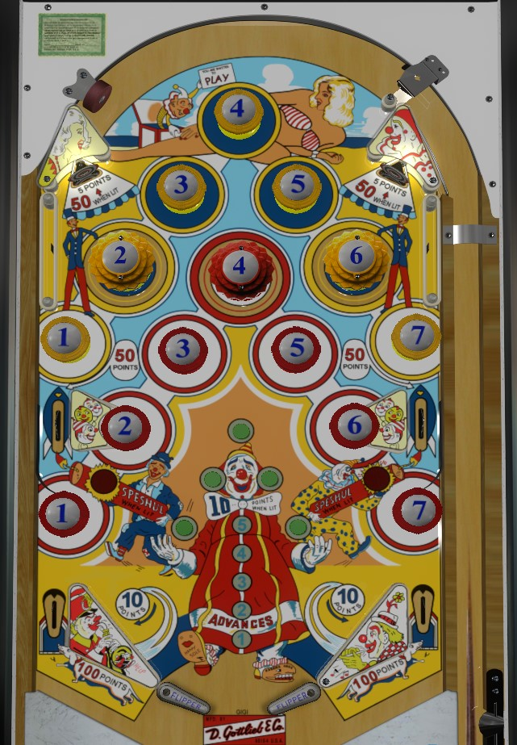

Hit a bumper to light that bumper and unlight the bumper with the same number but opposite colour. Bumpers always score just 1 point. If at any time all 7 bumpers of one colour are lit (much much easier with red than yellow), you'll earn one Advance, the lit bumpers will be locked in, and the side lanes will be lit for a special alternately based on 1 point switch hits. The side lanes also score 50 points at all times. Value from Advances is earned at the end of the game: typically, you'll receive 100 points per advance, as well as a free game for each advance starting with the 3rd, though operator settings can make the points and specials less lucrative. Top left and right standup targets are lit alternately for 50 points, but because so many of the bumpers are passive bumpers instead of pops, they're almost impossible to hit. Any out lane drain scores 100 points, which is a lot more meaningful for scoring than it really ought to be.
